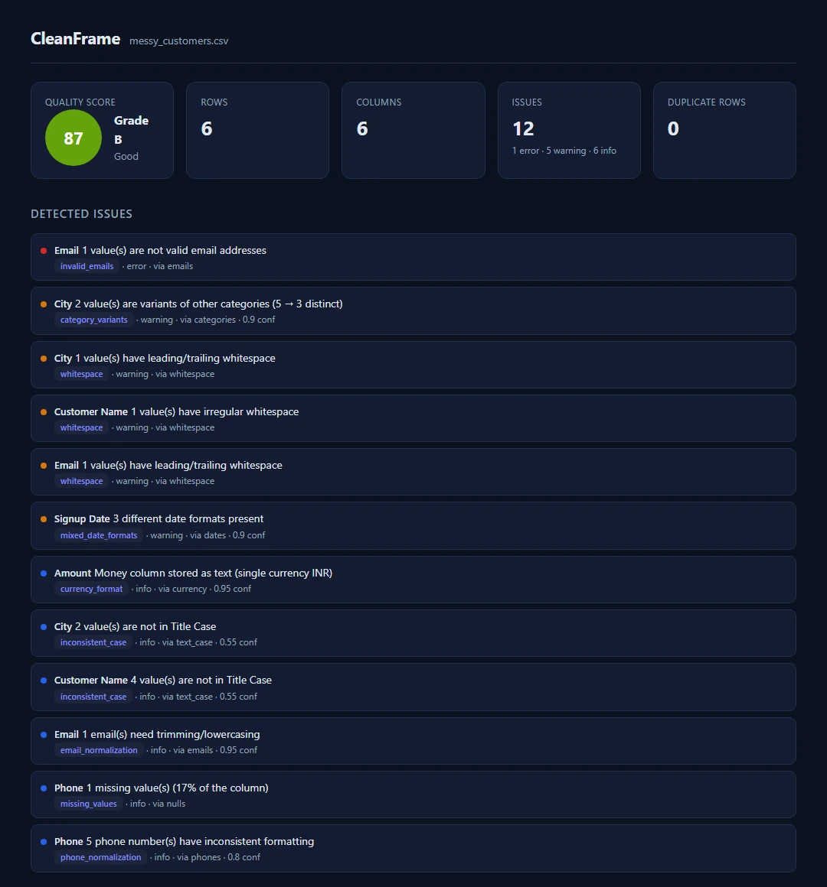
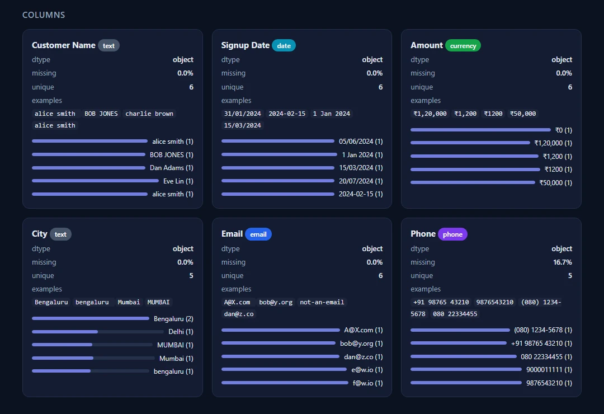

CleanFrame
Project Overview
CleanFrame is an open-source Python library that turns the spreadsheet nobody wants to open into clean, typed, validated data — and then makes sure you never have to do it by hand again. It profiles the file, detects the issues, proposes a plan, executes that plan in pure pandas, and saves the whole thing as a recipe: a versionable YAML file that replays on next month's file with zero AI calls.

It ships on PyPI as cleanframe-engine, imports as cleanframe, and comes
with a CLI. It is Apache-2.0, it runs fully offline, and the LLM is optional in the strictest
sense: you can install it, clean a file, save a recipe and replay it forever without ever setting
an API key.
Why I Built This
Every team has that file. The vendor spreadsheet that arrives monthly with dates in three
formats. The CRM export where Bengaluru, Bangalore and BLR
are three different cities. The finance sheet with ₹1,20,000 sitting in a
column pandas typed as object.
You clean it by hand. Next month it arrives broken in a new way, and you clean it again. I have watched that loop eat a data team's week, every month, for years — and I have been the person inside the loop.
The obvious 2026 answer is "point an LLM agent at the dataframe." I tried it, and it fails for a boring reason: you can't ship the model probably fixed it to production. The same file and the same prompt give you two different answers on Tuesday and Wednesday. There's no diff to review, no artifact to commit, and nothing that fails loudly when the input changes shape.
So CleanFrame is built on one rule, and everything else follows from it:
The LLM never touches your data. It only writes the plan.
The plan compiles to deterministic pandas operations. Same input, same output, every time. Every changed cell is tracked. Every step is reviewable, reversible, and exportable as plain Python you can read without CleanFrame installed.
The Problem
The tooling around messy data is split into camps that each solve one third of it:
- Profilers (YData Profiling) tell you what is wrong and stop there
- Validators (Great Expectations, pandera) guard the gate but never fix anything
- Chat-with-your-data tools (PandasAI) fix things ad hoc, and say themselves that they're exploration tools
- GUI cleaners (OpenRefine) are excellent and entirely manual
- SaaS importers (Flatfile, OneSchema) do the whole job and start around $6k a year
Nothing in that list gives you a fix that is reproducible. That's the gap, and it isn't about the algorithm — it's about the artifact. A cleaned CSV is a dead end. A cleaning recipe lives in git, gets reviewed in a pull request, and replays in CI.
How It Works
One pass through the pipeline produces four things: a cleaned frame, a recipe, a cell-level diff, and a quarantine table holding the rows validation refused.
CSV / Excel / DataFrame
|
v
profile.py --> detectors/ --> planner.py --> Recipe (YAML)
| | |
| llm.py (optional) |
v v
Issues executor.py
|
+----------------------------+----------------+
v v v v
validate.py diff.py drift.py report.pyThe profiler assigns each column a semantic type and a set of statistics. Detectors — ten families of them, all plugins — turn those statistics into typed issues with confidence scores. The planner gates on confidence, resolves renames, and fixes the operation order. Only then, and only if you asked for it, does a model see anything at all: column names, dtypes and regex sketches of the value patterns, never the raw cells.
The executor runs in four phases, in this order, because the order is what makes replay deterministic: column ops, then the atomic rename map, then frame-level ops like dedup, then validation. The diff is computed afterwards from the lineage the executor recorded, so it reports what actually happened rather than re-deriving a guess.
| Module | Responsibility |
|---|---|
profile.py |
Semantic typing and column statistics |
detectors/ |
Issue discovery and op proposals — dates, currency, categories, contacts, dedup, nulls, outliers, text, units, schema mapping |
planner.py |
Confidence gating, rename resolution, canonical op order |
llm.py |
Optional plan writer — metadata only, never raw cells |
executor.py |
Deterministic four-phase replay, plus cell lineage |
drift.py |
Fingerprint comparison on replay — the thing that stops the pipeline |
codegen.py |
Recipe to a standalone pandas script with no CleanFrame dependency |
The Recipe Is the Product
The cleaned dataframe is a side effect. The recipe is the thing worth keeping: short enough to read in a pull request, precise enough to argue with, and stamped with a fingerprint of the file it was written against.
# CleanFrame recipe - generated by CleanFrame, edited by you, owned by git.
version: 1
source_fingerprint:
columns: 6
column_names: [Customer Name, Signup Date, Amount, City, Email, Phone]
row_count: 6
hash_sample: 09264e6b98b451bc
columns:
Customer Name:
rename_to: customer_name
ops: [collapse_whitespace]
Signup Date:
rename_to: signup_date
ops:
- parse_date:
formats: ['%Y-%m-%d', '%d/%m/%Y', '%d %b %Y']
Amount:
rename_to: amount_inr
ops: [parse_number]
City:
rename_to: city
normalize_values: {bengaluru: Bengaluru, MUMBAI: Mumbai}
validate:
- {column: email, check: valid_email, on_fail: quarantine}
- {column: amount_inr, check: ">= 0", on_fail: quarantine}Next month the file comes back. No model, no tokens, no variance:
cleanframe apply new_customers.csv --recipe customer.recipe.yaml --out clean.csvAnd when the incoming file has quietly changed shape, the run stops instead of corrupting a column. This is the feature I care about most, because it's the one that turns a cleaning script into something you can leave unattended in Airflow:
⚠ Schema drift detected in new_customers.csv
- Column "Amt (INR)" is new - 94% match to recipe column "amount_inr"
- 312 values in "signup_date" match no allowed date format (new: "Jan 5, 26")
Run `cleanframe suggest new_customers.csv --recipe customer.recipe.yaml --update`
to review a patch.Every Changed Cell, Named
A cleaning tool that can't show its work is a cleaning tool you have to trust. CleanFrame tracks lineage through the executor, so the diff is a record of what each op touched rather than a recomputed guess. This is the real output on the sample file that ships in the repo:
CleanFrame diff 18 cell(s) changed in 6 column(s), 1 row(s) dropped (6 -> 5 rows)
renamed: Customer Name -> customer_name, Amount -> amount_inr, ...
signup_date (5 changed)
row 0: - '31/01/2024' + '2024-01-31'
row 2: - '1 Jan 2024' + '2024-01-01'
amount_inr (6 changed)
row 0: - '₹1,20,000' + 120000.0
row 2: - '₹1200' + 1200.0
city (2 changed)
row 1: - 'bengaluru ' + 'Bengaluru'
row 3: - 'MUMBAI' + 'Mumbai'
dropped rows: 1 (email:valid_email)
That last line matters as much as the rest. The row with the invalid email wasn't deleted —
it went to result.quarantine with the reason attached. Validation failures are held
back with an explanation, never silently discarded.
Screenshots
The quality report
Before you change a single cell, cleanframe report writes a standalone HTML file: a
quality score, an issue list with severity and confidence, and the detector that raised each one.
No API key, no config, one command.

Column profiles
Below the issues, every column gets a semantic type badge, a missing-value rate, a cardinality count and a value distribution. This is the view that usually ends the argument about whose export is broken.

Where the LLM Fits
CleanFrame is LLM-optional and provider-agnostic. Planning has three exposure levels, and the default is the one where nothing leaves your machine. Replay — the mode you actually run in production — needs no model at all:
| Mode | What runs | Data leaves your machine? |
|---|---|---|
| Rules-only (default) | Deterministic detectors and heuristics | Never |
| Metadata | The model sees column names, dtypes and regex sketches of value patterns | Metadata only |
| Sample | The model sees an anonymized, shuffled sample you approve first | The approved sample only |
| Replay | A saved recipe | Never — replay needs no model at all |
Keys come from environment variables and are never stored, logged or transmitted. Any provider
that speaks OpenAI Chat Completions works out of the box — Anthropic natively, plus OpenAI,
OpenRouter, Groq, Together, Fireworks, DeepSeek, Mistral, Gemini, xAI and Cohere, or a local
Ollama or LM Studio endpoint. There's a hard cost ceiling too: max_tokens_budget
aborts planning before it gets expensive, rather than after.
Air-gapped operation is a first-class mode, not a degraded one. That was a deliberate constraint — the teams with the messiest data are often the ones who can't send it anywhere.
What It Cleans
| Problem | Example |
|---|---|
| Column name chaos | Cust Name, customer_name, CustomerName → customer_name |
| Date formats | 12/01/24, 1 Jan 2024, 2024-01-01 → ISO dates |
| Currency and numbers | ₹1,20,000, $1,200, 1200 INR → typed floats plus a currency column |
| Category variants | Bengaluru / Bangalore / BLR → one canonical value |
| Emails and phones | Validation, normalization, country codes |
| Duplicates | Exact and fuzzy matching, with reviewable merge proposals |
| Missing values | Detected and explained; strategies proposed, never silently applied |
| Units | 5kg, 5000 g, 5 KG → normalized |
| Schema mapping | A messy file onto your target schema, with confidence scores |
| Outliers | Flagged with evidence — detected, never auto-"fixed" |
Making It Production-Safe
The first release worked. Making it something I'd put in someone else's pipeline took a full audit of the CLI, the API, the packaging and the docs — and that audit is where the interesting bugs were. Almost all of them shared a shape: the library was wrong quietly.
-
normalize_phoneon a column pandas had read as float appended a spurious digit. One blank cell turned9876543210into98765432100, and nothing warned. -
European decimals were parsed with the US convention.
€1.200,50became1.2005, while the issue report said nothing was unparseable. -
A fuzzy category merge folded
UnapprovedintoApproved. A spelling that is another spelling plus a negation prefix is now never merged. -
A ragged CSV row shifted every column left, because pandas promoted the first field to the
index. Reads now pass
index_col=False. -
values: [Yes, No]in a validation rule matched nothing: YAML 1.1 reads those as booleans, so the rule rejected every row it was meant to accept. -
Generated code interpolated column names into comments and
raisestatements unescaped, so a CSV header containing a newline produced an exported script that executed arbitrary statements. Exports now escape spreadsheet formula injection in headers too, not just in cells.
The rules that came out of it are invariants the test suite now enforces. Unknown op parameters
are rejected at load time instead of silently doing nothing. Wrongly-typed parameters are refused
rather than coerced — remove_symbols: 5 used to delete every digit 5. Writing
output over the input file needs an explicit --overwrite, and every write goes
through a temporary file that's moved into place. And the CLI has distinct exit codes, so a drift
stop (3) is scriptably different from a validation failure (4) and from
a usage error (2).
Alongside that came the scaling work: out-of-core streaming replay for larger-than-RAM CSVs, multi-sheet Excel workbooks cleaned into one reviewable recipe, read-time encoding and delimiter sniffing pinned into the recipe so a replay reads the file exactly the way the original run did, detector sampling capped at 50k values, and a diff that snapshots only the columns an op touched — so peak memory stays near the size of the input instead of double it.
Tech Stack
Core
Optional Extras
Reporting & CLI
Engineering
How This Is Different
Use PandasAI to explore. Use pandera or Great Expectations to guard. Use OpenRefine when a human should do it by hand. CleanFrame is for the job none of them does repeatably: fix it, and be able to fix it the same way again next month.
| CleanFrame | PandasAI | GX / pandera | Flatfile / OneSchema | |
|---|---|---|---|---|
| Fixes data, not just reports it | Yes | Ad hoc | Validates only | Yes |
| Deterministic and reproducible | Yes — recipes | No | Yes | Partly |
| Built for pipelines | Yes | Exploration only | Yes | Yes |
| Works with zero LLM, offline | Yes | No | Yes | Partly |
| Cell-level diff and lineage | Yes | No | No | Partly |
| Schema-drift alerts on re-import | Yes | No | Partly | From $6k a year |
| Free and open source | Apache-2.0 | Yes | Yes | No |
What Shipped
~11K
Lines of typed Python
336
Tests across 24 suites
10
Detector families
0
API calls on replay
My Contribution
I designed, built, documented and released the whole thing:
- Framed the product around the artifact rather than the output — the recipe is the deliverable, the clean CSV is a side effect
- Designed the recipe format, the schema format, the source fingerprint, and the drift comparison that reads it
- Built the profiler, the plugin detector system, the confidence-gating planner and the four-phase deterministic executor
- Wrote the cell-level lineage and diff, the quarantine model, and the codegen that exports a recipe as a dependency-free pandas script
- Built the provider-agnostic LLM layer with three exposure levels and a hard token budget
- Added the scaling work: multi-sheet workbooks, out-of-core streaming replay, read-time format auto-correction
- Ran the production-hardening audit and fixed the silent-corruption class of bugs it surfaced
- Set up CI, mypy, ruff, CodeQL, Dependabot, the wiki sync and the PyPI release
- Wrote the README, the wiki, the production guide, the recipe and schema specs, and the contributor invariants
Challenges & Learnings
Determinism is a discipline, not a feature. It costs you something on almost
every line. Sort before iterating anywhere order is observable. No clock, no random,
no network in the core path. The detector registry runs in (priority, name) order and
columns in frame order. Even the LLM's sample shuffle is seeded by column name, and it only
affects the prompt — never the executor. Miss one of those and "same input, same output"
becomes a claim you can't keep.
Silent success is worse than a crash. Nearly every serious bug in the audit was
a path where the library did something plausible and said nothing. An op parameter that loaded
and did nothing. A currency parse that produced a number, just the wrong one. A drift guard
disabled by a typo in on_drift. The fix was a rule rather than a patch: reject
unknown parameters at load time, refuse wrongly-typed ones instead of coercing them, and warn
visibly whenever the library degrades. A tool that cleans your data has to be honest about what
it couldn't do.
The LLM boundary has to be architectural. "We only send metadata" is a promise
that decays the moment a convenient prompt needs one more field. Making exposure a typed mode
— and making none mean no network call at all, rather than "the same payload
as metadata" — is the difference between a policy and a property.
Import direction is a real constraint. Dependencies have to point strictly
downward, which sounds like taste until a cycle between recipe and
validate makes a load-time guard impossible to place. Splitting the check registry
into its own module removed the last cycle in the package. Small change, and it's why the
contributor guide leads with the rule.
Publishing is its own engineering. The name cleanframe was taken on
PyPI, so the distribution is cleanframe-engine while the import package stays
cleanframe. The sdist ships an explicit allow-list, so an untracked file in a working
tree can never end up in a release. And CodeQL found a real bug the day the repo went public: the
Severity enum defined only __lt__, so the str mixin
answered everything else and Severity.ERROR > Severity.INFO came back
False — because "error" sorts before "info"
alphabetically.
What's Next
MessyData-100 is the piece I most want to exist: a public benchmark of a hundred genuinely messy files with a leaderboard, so "this tool cleans data well" becomes a measurable claim instead of a marketing one. After that, exporters for pandera, Great Expectations and dbt, so a CleanFrame recipe drops into the validation stack a team already runs.
Then a Polars backend, and a recipe registry for teams — recipes shared the way schemas are shared today.
The detector plugin system exists because the long tail of messy-data weirdness isn't something one person can enumerate. A new detector is about thirty lines, and the good first issues are tagged for exactly that.
Closing Note
The bet behind CleanFrame is that the durable output of an AI tool shouldn't be the answer. It should be the artifact that produces the answer — something you can read, review, version, and run again without the model.
AI suggests. Pandas executes. Rules validate. You approve. Profile it once, recipe it forever.